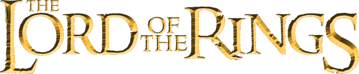

The Fellowship of the ring
De Hobbit Frodo Balings krijgt van zijn oom Bilbo Balings een gouden ring. Dit blijkt een magische ring te zijn die grote macht in zich draagt. De Ring is gesmeed door Sauron, degene die al het kwade in Midden-aarde vertegenwoordigt. Sauron kan alleen verslagen worden als de Ring wordt vernietigd. Dit laatste kan enkel gebeuren in het vuur van de Doemberg, waar de Ring ook door Sauron gesmeed werd.
De vertelling begint in de Gouw en doorkruist hierna heel het westen van Midden-aarde tot aan het vijandelijke land Mordor. Het verhaal wordt afwisselend verteld vanuit het perspectief van de hobbits Frodo Balings, Sam Gewissies, Meriadoc Brandebok en Peregrijn Toek en vanuit het perspectief van de Doler Aragorn, de Dwerg Gimli, de Elf Legolas en de Tovenaar Gandalf.
The Two Towers
The Fellowship is torn apart. Sauron's power is growing stronger. While venturing on to Mordor, Frodo and Sam come across the grotesque creature Gollum, who is forever consumed by the Ring's power. Meanwhile, Aragorn, Gandalf, Legolas and Gimli meet up with new allies in the Plains of Rohan. Together, they must work to defend the people of Rohan against Sauron's puppet Saruman as he unleashes his armies from Isengard. All the while, Sauron prepares to launch an attack on Gondor. The War for the Ring begins here.
The return of the king
The War of the Ring reaches its climax as the dark lord Sauron sets his sights on Minas Tirith, the capital of Gondor. The members of the fellowship in Rohan are warned of the impending attack when Pippin cannot resist looking into Saruman's palantír and is briefly contacted by the dark lord. King Théoden is too proud to send his men to help without being asked, so Gandalf and Pippin ride to Minas Tirith to see that this request is sent. They meet opposition there from Denethor, steward of the city and father of Faramir and the late Boromir. Denethor's family has acted as temporary guardians of Gondor for centuries until a member of the true line of kings returns. This member is none other than Aragorn, who must overcome his own self-doubt before he can take on the role he was destined to fulfill. Meanwhile, Frodo and Sam continue to carry the One Ring towards Mordor, guided by Gollum. What they don't know is that Gollum is leading them into a trap so that he can reclaim the Ring for himself. Though Sam suspects his deceit, Frodo is starting to be corrupted by the Ring's power and the mistrust of Sam this causes is fully exploited by Gollum. The only way good can prevail in this contest is if the Ring is destroyed, an event that is becoming harder every minute for Frodo to achieve. The fate of every living creature in Middle Earth will be decided once and for all as the Quest of the Ringbearer reaches its climax.
